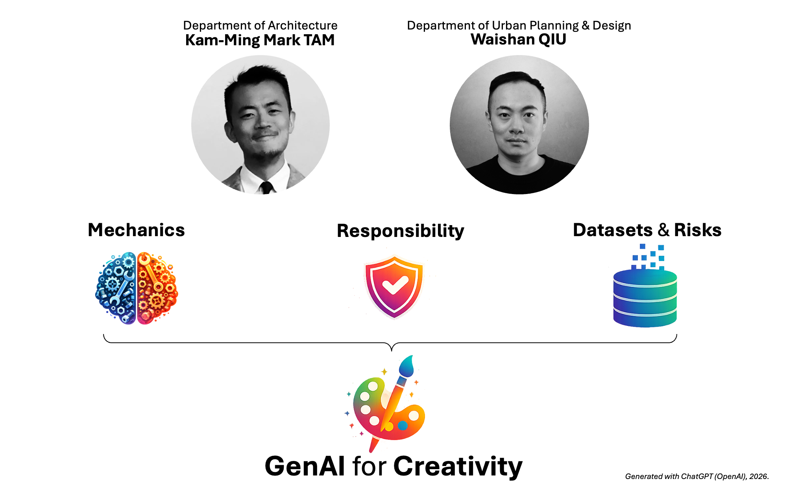

CCAI 9012
Lecture: Wednesdays, 17:00–18:50, LE4

GenAI Solutions to Global Challenges explores how artificial intelligence, and generative AI in particular, can be used carefully and creatively in architecture and urban design. The course introduces core ideas behind data, machine learning, and generative models, and focuses on how these systems behave in practice rather than in abstraction.
Teaching is organised around lectures, tutorials, and case studies, alongside a team-based course project. Students work with datasets, examine model behaviour, and test AI tools through hands-on exercises, while engaging directly with questions of bias, transparency, accountability, and social impact. Ethical and responsible use is treated as a practical design concern, not a theoretical add-on.
This document links the various course components, including weekly lecture materials, tutorial resources, readings, case study briefs, and project starter kits. Content will continue to evolve over the semester as tools, examples, and risks around AI change.
Here are some important course links:
-
Course Outline [link]: View the summary course outline, including the overall course structure, assessment, and key information.
-
Course Plan [link]: the week-by-week sequencing of lectures, tutorials, and assessment milestones.
-
Course Weekly Tutorials
⚠️ Coursework Reminder — 2026.11.17
Grades and participation records
- A.0 Applied Exercise: Grades will be released by Wednesday, 18 November.
- A.2.1 Midterm Pecha Kucha: Grades are now available on Moodle.
- A.G Attendance and Participation: Logs will be posted on Moodle by Wednesday, 18 November. Please check your record and email us if anything looks off.
A.2.2 Final Course Project
- Review the final project guidelines [link].
-
Presentation dates
- Wednesday, 2 December: Main presentation session. We’ll play your videos in class, so please submit them in advance.
- Wednesday, 9 December: We’re inviting up to five groups to volunteer for a second presentation session so we have time to give every group feedback. Places are first come, first served, and students who volunteer and present on this date will receive a small participation bonus. If your group is interested, please sign up by the end of this week [link].
-
Submission deadlines
- Video — before class on Wednesday, 2 December: All groups, including those presenting on 9 December, should submit their four-minute video using the video submission form [link].
- Abstract and report —
Wednesday, 9Saturday, 12 December at 00:00: Submit both using the final submission form [link]. You can also upload a revised video by this date using the original video submission form [link].
- Final project consultations: I’ll be in KB413 (within KB401) on Wednesday, 18 November, from 4:00 to 4:45 pm and 7:30 to 8:30 pm. I’ll open additional slots on Thursday, 19 November. Please sign up under Final Project Consultation in Special Tutorials [link].
Participation and December sessions
- Regular classes and tutorials: When considering participation, we’ll look at Weeks 3–13 (16 September to 25 November). This covers our Wednesday classes after add/drop through our last Wednesday class before the teaching period ends on 30 November. Please come to class and attend at least eight tutorials during this period, including at least one Crit-Style Peer Review.
- December presentations: Please attend your own group’s presentation. Attendance is otherwise optional. If you can’t make your group’s presentation, please email us in advance and let us know why.
- Course review on 9 December: After the presentations scheduled for that day, we’ll review the course material together. Everyone is welcome to join, and we won’t log attendance for the review.
Email practices and reminders
-
Requirements for all course-related emails
To help us process your request and get back to you, please always do both of the following.- Include CCAI9012 in the subject line.
- Copy both May <Mayelhadidi@connect.hku.hk> and Chao <chao.tang@connect.hku.hk>.
- Following up on an unresolved issue
If you’ve already emailed us about an attendance discrepancy, a grade query, or another course matter and are still waiting for a reply, please follow up in the original thread so we can see the earlier correspondence. Please check that CCAI9012 is in the subject line and that both May and Chao are copied when you reply.
Documentation
📅 Course Plan
View the complete course schedule with weekly topics, assignments, and activities.
View Schedule →📚 Reading Materials
Curated academic papers and resources organized by learning modules.
Read More →📦 Installation Guide
Set up your development environment with Anaconda and all required dependencies.
Get Started →🚀 Starter Kits
Explore five comprehensive modules for your AI projects, from GANs to bias detection.
View Kits →🛢️ Datasets Reference
Access 40+ datasets with direct download links for your projects.
Browse Datasets →